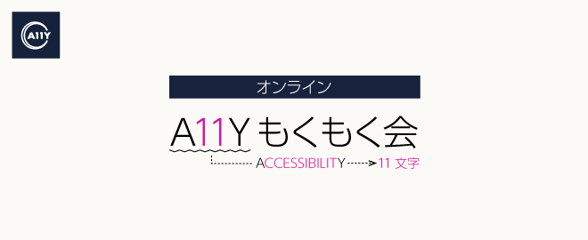
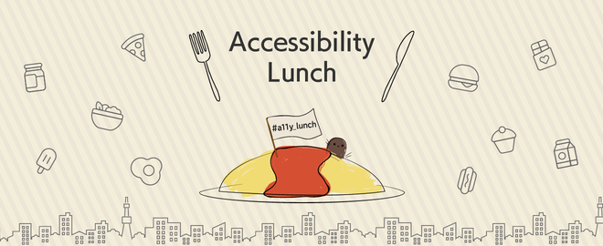

CA11Yとは
渋谷を中心に行われるアクセシビリティの勉強会グループです。主にウェブやアプリ、電子書籍などの情報アクセシビリティ向上に取り組む人が気軽に立ち寄れる、集まれる場所を目指しています。
CA11YのCは渋谷のCです。
開催イベント
CA11Y
登壇者がいて、LT枠があって、という形式の勉強会です。誰かの知見を聞いたり、共有したい！を叶えます。
ハッシュタグ #ca11y
アクセシビリティもくもく会
WCAGなどのアクセシビリティ関連文書や仕様をみんなでもくもくと読んだり、アクセシビリティに関する作業をもくもくとする会です。
わからないことがあれば、ハッシュタグで聞いたり、同じテーブルの人に聞いたりします。みんなでやれば怖くないの精神です。
A11YJ.slack.comの #a11y_moku2 部屋でオンラインチャット的にやることもあります。
ハッシュタグ #a11y_moku2
アクセシビリティランチ
アクセシビリティのことを話しながらランチするランチミートアップです。だいたい第4木曜日にやってます
ハッシュタグ #a11y_lunch
運営メンバー
リンク
- @CA11Y_
- イベント
- CA11Y - connpass